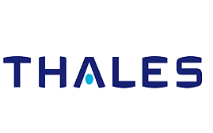
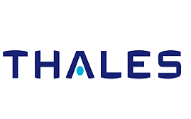

Date: 22 July 2021
Time: 8:30AM
Abstract: Passive acoustic monitoring (PAM) methods are used for monitoring and studying a wide variety of soniferous marine fauna. The use of automatic recognition techniques has largely underpinned the successes of PAM undertakings by improving the ease and repeatability of analyses. Over the past decade, the adoption of machine learning (ML) based recognition techniques has brought about improved accuracy and reliability in mining large acoustic datasets, facilitating a suite of ecological studies, such as call-or cue-based density estimation, stock identification, or cultural transmissions. This talk will provide an overview of PAM undertakings, present a brief overview of the various automation techniques used and contrast them with modern ML-based techniques. We will present a gentle introduction to ML concepts as they apply to acoustic event recognition, and provide a hands-on demonstration of developing a ML model using real underwater acoustic recordings.
About the Speaker: Dr Shyam Madhusudhana is a postdoctoral researcher at the K. Lisa Yang Center for Conservation Bioacoustics (CCB) within the Cornell Lab of Ornithology. His research interests arelargely multidisciplinary as is his academic background–Bachelors in Engineering, Masters in Computer Science, and PhD in Applied Physics. He has also worked as a speech scientist for a leading Automatic Speech Recognition solutions provider. Prior to joining CCB, he has beena research associate atthe Centre for Marine Science and Technology in Australia, a research associate at the National Institute of Oceanography, Goa, India and a postdoctoral research fellow at the Indian Institute of Science Education and Research in Tirupati, India. His current research involves developing deep-learning techniques for realizing effective and efficient machine-listening in the big-data realm, with applications in themonitoring of both marine and terrestrial fauna.


 
